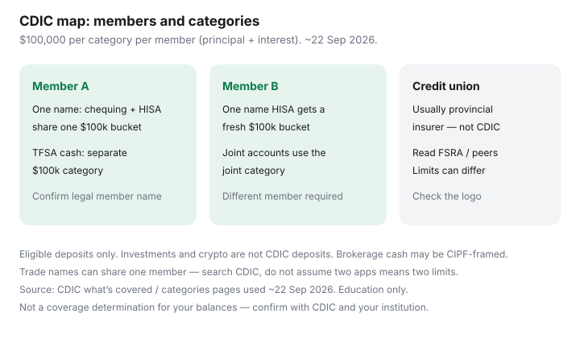

Personal Finance · Canada
How CDIC Coverage Works When You Split Savings Across Canadian Banks
Canadian savers either leave a six-figure cash pile at one bank and hope, or open five HISAs because a chart said “more banks.” Both miss how CDIC categories actually work. Coverage is not “$100,000 per login.” It is up to $100,000 including principal and interest, per insured category, per member institution.
This is a practical coverage map for households that split cash across banks. CDIC pages used ~22 Sep 2026. Confirm live limits and membership before you move money. Education only — not deposit advice.
Disclosure: Banking and HISA accounts are offer types. Saving Optimizer may later add partner links. We do not currently claim bank partnerships. This is education. Confirm CDIC membership, provincial credit-union insurance, and product eligibility with the insurer and the institution.
Key takeaways
- CDIC covers eligible deposits up to $100,000 per category per member (principal + interest).
- Unregistered chequing and savings at the same member share the “deposits in one name” bucket; TFSA/RRSP/FHSA and other registered categories are separate.
- Splitting across different members can add coverage; two brands under one member do not.
- Credit unions usually use provincial deposit insurance, not CDIC.
- A higher HISA rate does not replace insurance design — map coverage before you chase 20 basis points.
CDIC basics: what is covered and typical limits
CDIC insures eligible deposits at member institutions: chequing, savings, HISAs, GICs and term deposits, and foreign-currency deposits, among others listed on CDIC’s “what’s covered” pages (used ~22 Sep 2026). Stocks, bonds, ETFs, mutual funds, and crypto are not eligible deposits. The standard limit is $100,000 including principal and interest for each insured category at each member.
Always confirm with CDIC’s member search whether the brand on your app is the member name — trade names can share one member (for example EQ Bank as a trade name of Equitable Bank, as noted in our emergency-fund guide).
Category rules: deposits vs registered accounts
Categories commonly include deposits in one name, joint deposits, trust deposits, and registered plans such as RRSP, RRIF, TFSA, RDSP, RESP, and FHSA. Practical household rules:
- Unregistered HISA + unregistered chequing at Member A = one “one name” bucket.
- TFSA HISA at Member A = separate category from the unregistered bucket.
- Joint account with a spouse = joint category, not double individual coverage on the same dollars.
- FHSA and TFSA at the same member are different registered categories.
Do not assume a “savings” label in the app creates a new category. The legal ownership and registered status do.
| Place | Category sketch | Coverage sketch |
|---|---|---|
| Bank A chequing $8,000 + HISA $70,000 (one name) | One name at Member A | ~$78,000 of $100,000 used |
| Bank A TFSA cash $40,000 | TFSA at Member A | Separate $100,000 category |
| Bank B HISA $90,000 (one name) | One name at Member B | Fresh $100,000 category |
| Credit union savings $50,000 | Provincial insurer rules | Not CDIC — read provincial limit |

When splitting across institutions actually adds coverage
Splitting helps when eligible unregistered cash at one member approaches $100,000, or when you want registered and unregistered cash at different everyday banks for access reasons. Splitting does not help when:
- Both brands are the same CDIC member.
- The product is not an eligible deposit (some investment “cash” products).
- You are under the limit at one member and only adding complexity.
For emergency cash design, pair this map with where to park an emergency fund.
Credit unions and provincial deposit insurance quirks
Ontario credit unions often sit under FSRA deposit insurance; other provinces use their own regimes (for example DGCM in Manitoba). Limits, eligible products, and category designs can differ from CDIC. A higher posted rate at a credit union is not automatically “worse insurance” — but it is a different rulebook. Read the insurer’s page, not a bank comparison chart that assumes CDIC everywhere.
HISA parking vs “more banks” myths
Myths to retire:
- “Five banks = five times safer.” Two members with clean categories beat five neglected logins.
- “A promo HISA is uninsured.” Insurance follows eligible deposits at members, not the marketing tile — still confirm.
- “Brokerage cash is the same as a bank HISA.” CIPF framing is a different protection story.
Rate shopping still matters for yield — see when a HISA promo drops — but insurance is a map, not a teaser.
A simple coverage map for a household
- List every cash balance with institution legal name, ownership (one name / joint), and registered status.
- Look up each institution in CDIC’s member search (or the provincial insurer).
- Sum eligible balances by category by member.
- If any unregistered “one name” bucket nears $100,000, move excess to another member or another eligible category you already use — after confirming rules.
- Re-check after large tax refunds, home sales, or inheritance deposits.
Sources & date stamps
- CDIC — “What’s covered,” coverage amount, and categories (pages used ~22 Sep 2026).
- CDIC — member institution search (confirm trade names vs members).
- Provincial credit-union deposit insurers — verify locally (FSRA and peers).
- Issuer disclosures for EQ Bank / Equitable Bank aggregation and brokerage cash / CIPF framing (cross-check with product pages).
Frequently asked questions
Does splitting savings across two Big-5 banks double CDIC coverage?
Yes for eligible deposits in the same category at two different CDIC member institutions — each member has its own $100,000 limit per category. Two brands that are the same member do not double coverage. Confirm membership with CDIC’s search tool.
Do TFSA and unregistered HISAs share one $100,000 limit?
No. Registered categories such as TFSA are separate from deposits held in one name. Your unregistered HISA and unregistered chequing at the same member still share the ‘one name’ bucket.
Are credit unions covered by CDIC?
Usually no. Credit unions typically use provincial deposit insurers. Read the logo on the site and the provincial limit rules, which can differ from CDIC’s category design.
Is a brokerage cash HISA CDIC-insured?
Sometimes the cash sits in trust at a CDIC member; sometimes protection is framed as CIPF for dealer insolvency. CIPF is not a CDIC deposit guarantee and is not market-loss insurance. Read the account disclosure.
Should I open five banks to protect $200,000?
Usually two well-chosen members plus correct categories beat a hobby of five logins. Map categories first; only then add an institution.